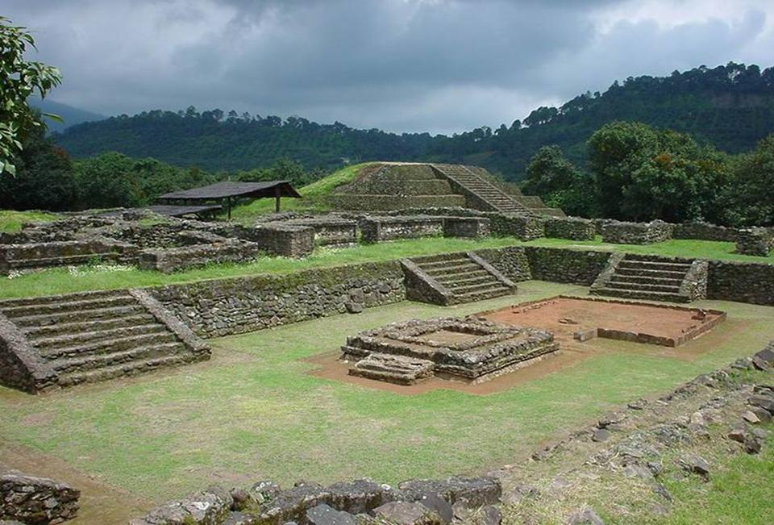
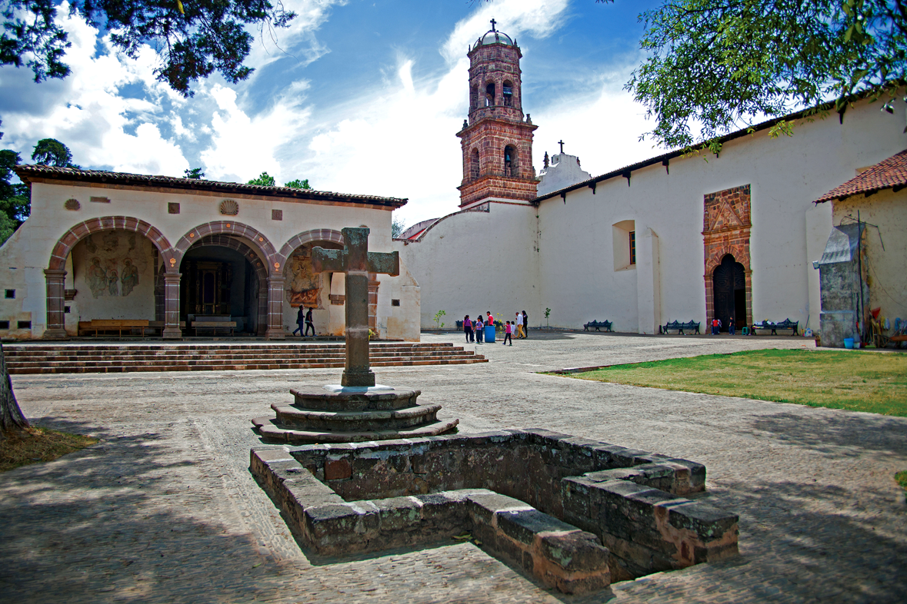
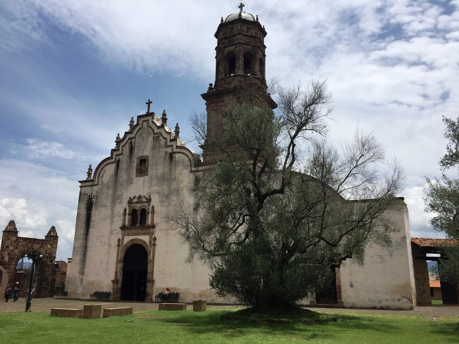
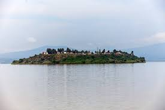

Zona Arqueológica Las Yácatas |

|
La antigua ciudad de Tzintzuntzan se construyó; mediante amplias terrazas y grandes plataformas que se van acomodando en las laderas de los cerros Yarahuato y Tarí;aqueri, sobre las que se desplantaron sus casas y edificios religiosos y administrativos.En esta ciudad habitaron los Señores Uacúsechas –Señores Águila-, líderes de este importante señorío quienes a través de una dinastía hereditaria lo gobernaron. Tzintzuntzan fue una ciudad que contenía los espacios rituales más importantes, plazas y yácatas (basamentos piramidales), además de ser residencia real del Irecha o Cazonci. |
Templo de San Francisco |
 |
El inicio de la construcción de este recinto fue en el año 1538. El Templo se encuentra dentro del mismo conjunto arquitectónico que el Excovento de Santa Ana.Este majestuoso templo posee un estilo plateresco y está conformado por dos niveles, tiene una fachada sencilla en forma cuadrangular.El templo tiene bajo su resguardo una antigua pintura denominada el Señor del Rescate.
|
Templo de la Soledad |
 |
Un recinto religioso que es resguardado por los integrantes de la comunidad con esmero y dedicación. Un templo de estilo barroco que data del siglo XVII, en donde podrás observar obras de arte colonial, pero sobre todo imágenes religiosas por las que esta comunidad guarda gran veneración. |
Isla de la Pacanda |

|
La Pacanda es una de las islas del lago de Pátzcuaro, de gran extensión y variedad de flora y fauna. Es uno de los lugares donde se puede asistir al cementerio para participar en la velación de los difuntos en el Día de muertos, cada año en noviembre. |